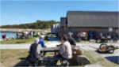

Djupviks hamn
Djupviks hamn ligger på Gotlands västkust nästan rakt öster om Lilla Karlsö.
Hamnen är otroligt vackert belägen i anslutning till ett gammalt Gotländskt fiskeläge.
I hamnen finns under sommarsäsongen en kiosk med lite av varje.
Ett par hundra meter ovanför hamnen ligger Djupviks Hotell,
ett hotell med restaurang och bra standard.
Senaste nytt
Succé för hamnens dag!
2017-07-16
Lördagen den 16 juli arrangerade föreningen Djupviks hamn i Eksta
”Hamnens dag” i Djupvik. Vårt arbete har med åren alltmer också inriktats på att alla besökare, även de som kommer landvägen skall trivas i det vackra hamnområdet.
Nu bjöds det in till ”Hamnens dag”. På plats fanns sjöfartsverkets SAR-helikopter, Sjöräddningens båt Hwitstjärna, släckningsbil från räddningstjänsten i Klintehamn,
russ från Gannarve och ett antal loppisförsäljare. Aktiviteten lockade ett stort antal besökare.
Uppskattningsvis 1000 besökare sökte sig under dagen till Djupvik. Intresset var stort för de besökande organisationerna som informerade och alla
fick möjlighet att titta och ställa frågor. Barnen fick rida, de bjöds på bulle och dricka och många prövade lyckan i fiskdammen.
Det fanns möjlighet att handla kaffe, korv, dricka och glass. Många dröjde sig kvar i hamnområdet och trivdes i det inledningsvis lite blåsiga men vackra vädret.
Hamn jobb
2017-05-07

Lördagen den 7 maj samlades ett 15-tal medlemmar för arbete i hamnen. Kiosken, kajerna och stranden städades. Kajer lagades och gräs brändes. Diverse fix på många håll.
Vädret var bra och korven god. Det som återstår inför säsongen är att ta bort släke från stranden, att sätta upp ramp vid kiosken och att fylla kiosken med varor.